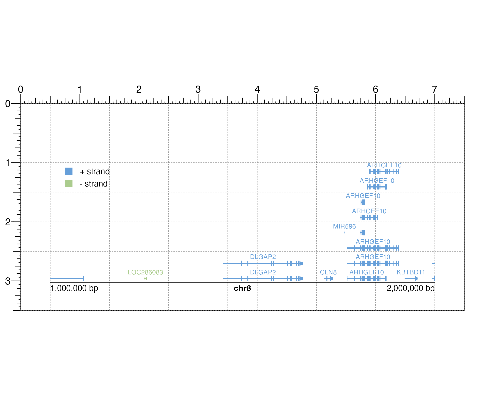

R/plotTranscripts.R
plotTranscripts.RdPlot gene transcripts in a pileup style for a single chromosome
plotTranscripts( chrom, chromstart = NULL, chromend = NULL, assembly = "hg38", fill = c("#669fd9", "#abcc8e"), colorbyStrand = TRUE, strandSplit = FALSE, boxHeight = unit(2, "mm"), spaceWidth = 0.02, spaceHeight = 0.3, limitLabel = TRUE, fontsize = 8, labels = "transcript", stroke = 0.1, bg = NA, x = NULL, y = NULL, width = NULL, height = NULL, just = c("left", "top"), default.units = "inches", draw = TRUE, params = NULL )
| chrom | Chromosome of region to be plotted, as a string. |
|---|---|
| chromstart | Integer start position on chromosome to be plotted. |
| chromend | Integer end position on chromosome to be plotted. |
| assembly | Default genome assembly as a string or a
assembly object.
Default value is |
| fill | Character value(s) as a single value or vector
specifying fill colors of transcripts.
Default value is |
| colorbyStrand | A logical value indicating whether to
color plus and minus strands by the first two colors in
a |
| strandSplit | A logical value indicating whether plus and
minus-stranded transcripts should be separated, with plus strand
transcripts plotted above the x-axis and minus strand transcripts
plotted below the x-axis. Default value is |
| boxHeight | A numeric or unit object specifying height of transcripts.
Default value is |
| spaceWidth | A numeric value specifying the width of minimum spacing
between transcripts, as a fraction of the plot's genomic range.
Default value is |
| spaceHeight | A numeric value specifying the height of spacing
between transcripts on different rows, as a fraction of |
| limitLabel | A logical value indicating whether to draw a "+"
when not all elements can be plotted in the plotting space. Default
value is |
| fontsize | A numeric specifying text fontsize in points.
Default value is |
| labels | A character value describing the format of
transcript text labels. Default value is
|
| stroke | A numeric value indicating the stroke width for
transcript body outlines. Default value is |
| bg | Character value indicating background color.
Default value is |
| x | A numeric or unit object specifying transcript plot x-location. |
| y | A numeric, unit object, or character containing a "b" combined with a numeric value specifying transcript plot y-location. The character value will place the transcript plot y relative to the bottom of the most recently plotted plot according to the units of the plotgardener page. |
| width | A numeric or unit object specifying transcript plot width. |
| height | A numeric or unit object specifying transcript plot height. |
| just | Justification of transcript plot relative to
its (x, y) location. If there are two values, the first value specifies
horizontal justification and the second value specifies vertical
justification.
Possible string values are: |
| default.units | A string indicating the default units to use if
|
| draw | A logical value indicating whether graphics output should be
produced. Default value is |
| params | An optional pgParams object containing relevant function parameters. |
Returns a transcripts object containing relevant
genomic region, placement, and grob information.
A transcripts plot can be placed on a plotgardener coordinate page by providing plot placement parameters:
plotTranscripts(chrom, chromstart = NULL, chromend = NULL, x, y, width, height, just = c("left", "top"), default.units = "inches")
This function can also be used to quickly plot an unannotated transcripts plot by ignoring plot placement parameters:
plotTranscripts(chrom, chromstart = NULL, chromend = NULL)
Genomic annotation information is acquired through
TxDb and OrgDb-class packages,
as determined through the assembly parameter.
## Load hg19 genomic annotation packages library("TxDb.Hsapiens.UCSC.hg19.knownGene") library("org.Hs.eg.db") ## Create page pageCreate(width = 7.5, height = 3.5, default.units = "inches")## Plot and place transcripts plotTranscripts( chrom = "chr8", chromstart = 1000000, chromend = 2000000, assembly = "hg19", labels = "gene", x = 0.5, y = 0.5, width = 6.5, height = 2.5, just = c("left", "top"), default.units = "inches" )#>## Plot genome label plotGenomeLabel( chrom = "chr8", chromstart = 1000000, chromend = 2000000, assembly = "hg19", x = 0.5, y = 3.03, length = 6.5, default.units = "inches" )#>## Plot a legend plotLegend( legend = c("+ strand", "- strand"), fill = c("#669fd9", "#abcc8e"), border = FALSE, x = 0.5, y = 1, width = 1, height = 0.5, just = c("left", "top") )#>